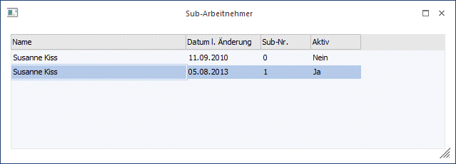

In diesem Fenster werden alle SUB-AN angezeigt, die für den gerade aufgerufenen AN angelegt wurden.

Das Fenster wird im Bedarfsfall bei folgenden Gelegenheiten geöffnet, wobei der Focus immer auf den aktiven AN gesetzt wird:
ü AN-Stamm
ü Einzelabrechnung
ü Chaoserfassung
ü Rollung
ü Krankenschein-Ausgabe
ü Storno einer Krankenschein-Ausgabe
ü Fehlzeitenerfassung
In allen Fällen muss aus der Tabelle der gewünschte SUB-AN ausgewählt werden. Durch einen Doppelklick auf den gewünschten Eintrag (bzw. durch Drücken der Return-Taste, wenn der Focus auf dem gewünschten SUB-AN steht) wird der entsprechende AN in das bearbeitende Fenster übernommen.
Felder
Die Felder, die in der Tabelle angezeigt werden, helfen, eine Unterscheidung zwischen den einzelnen SUB-AN zu treffen:
Ø Name
Der Name wird in den meisten Fällen bei allen SUB-AN gleich sein.
Ø Datum l. Änderung
Hier wird das Datum, an dem der AN das letzte Mal geändert wurde, angezeigt.
Ø SUB-Nr.
Hier wird die SUB-Nummer angezeigt. Der Haupt-AN hat immer die Nummer 0, die SUB-AN werden in der Reihenfolge der Anlage aufsteigend durchnummeriert.
Ø Aktiv
Es wird angezeigt, ob der AN bzw. SUB-AN aktiv ist oder nicht.
Das Fenster kann nur dann geschlossen werden, wenn ein gültiger AN bzw. SUB-AN übernommen wird (durch einen Doppelklick auf den gewünschten Eintrag oder durch Drücken der Return-Taste, wenn der Focus auf dem gewünschten Eintrag steht).